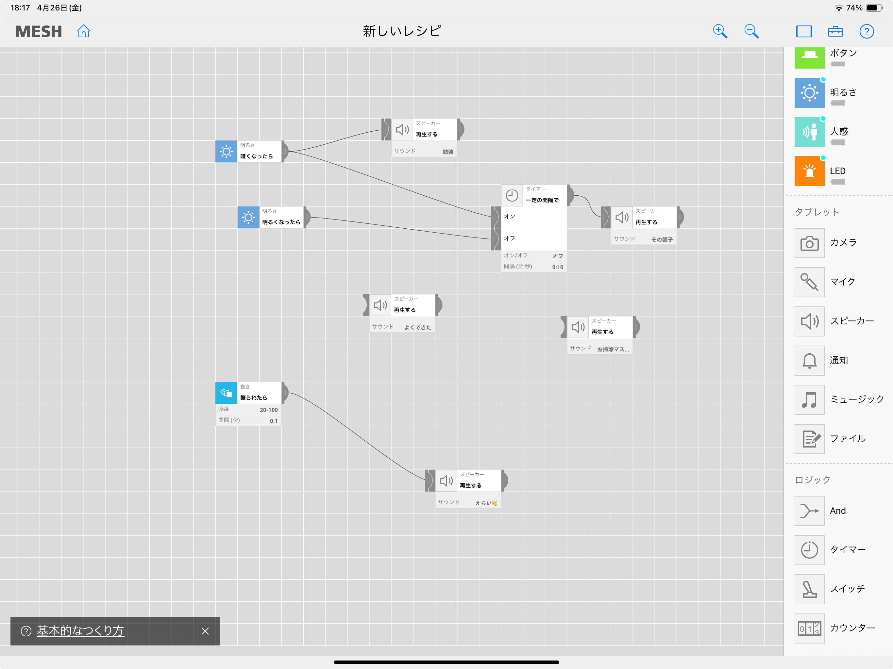

・全体の説明
・小学生向けワークショップまでの流れについて
・MESHを使ったワークショップの体験
・課題
を行った。
ワークショップ体験
ワークショップの体験では”生活が楽しくなる「未来の仕掛け」をプロトタイピングしよう”というテーマで実際にMESHを使ったプロトタイピングを行った。
私たちのグループでは
椅子に明るさセンサーを設置し、座ることで音声が流れる→設定した時間が経過すると音声が再び流れる
という仕組みを作った。
これは誰かに応援されることで勉強に励むことができるのではないか？という考えを元に作った。
（勉強を30分頑張ろうと思っても10分でやる気がなくなるなら、勉強を開始して9分の時点で音声が流れて応援されれば、少しはやる気になるかも知れないよね✨）

↑こんな感じになった
また、小学生向けワークショップのテーマを決めるにあたって、
「学習目標」「活動目標」を考えるためのグループワークを行なった。